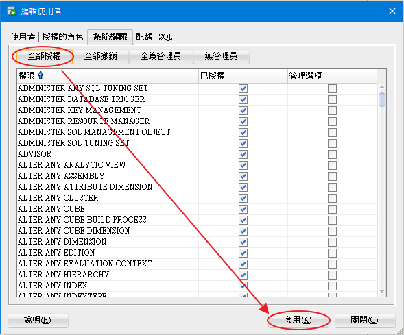
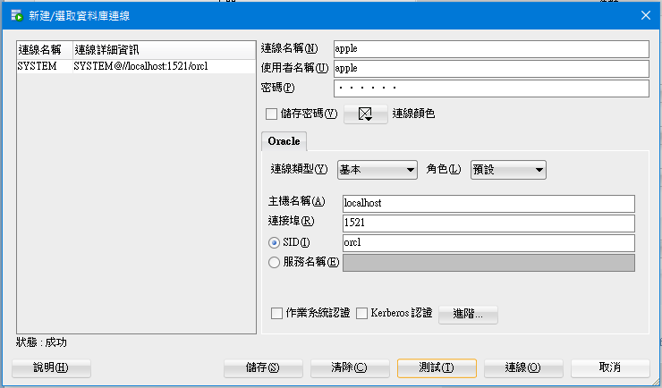

一、安裝 VS2017 Community
在 Windows 10 professional 安裝 VS2017 Community。
安裝完後請重新開機，避免之後在安裝 Oracle 時會遇到奇奇怪怪的問題。
二、安裝 Oracle 18c (18.3)
1、Oracle 18c 建議劃個 10GB 的記憶體給他，以滿足他的安裝需求，
而 Oracle XE 版本官方建議至少 2GB。
2、當下載好 Oracle 18c (18.3) 時，其檔名為 WINDOWS.X64_180000_db_home.zip，
我是將之解壓縮到名為 WINDOWS.X64_180000_db_home 資料夾，
注意 WINDOWS.X64_180000_db_home 資料夾安裝完後也要保留，
後續 Oracle 都會再使用他。
3、開始安裝 oracle
這裡的「起始資料庫」的意思比較像是 MSSQL 的 instance。

先在 C 槽新增一個名為 Oracle18c 的資料夾，該資料夾為 Oracle 基本目錄。
全域資料庫名稱相當等同於 MSSQL 的 instance 名稱。
其密碼就是設定 SYSTEM 帳號的密碼，相當等同於 MSSQL 的 sa 帳號。
我密碼組合為英文加數字，但 oracle 還是讓我過了
安裝完後請重新開機，避免之後在安裝 Oracle 時會遇到奇奇怪怪的問題。
三、安裝 ODAC (Oracle Data Access Components)
請至 Oracle Data Access Components - .NET Downloads 頁面下載，
這些 Oracle Developer Tools for Visual Studio (ODT) 中，
我已試過 ODAC for Visual Studio 2017 檔，但我安裝失敗，裝不起來，
可能要注意有些 ODAC 安裝條件是 Visual studio professonal 版本以上吧？
後來是選 「ODAC - Oracle Universal Installer (OUI) ODAC 18.3 - 561,909,827 bytes - November 23, 2018」來安裝。
建立連線別名可建或可不建，建的好處當然是之後需要連線到資料庫的時候，
不須一再重覆輸入下面四個欄位，可節省時間，
- 連線別名 (data source alias)
- 連接埠號碼 (port)
- 資料庫主機名稱 (hostname or IP)
- 資料庫服務名稱 (database service name)
四、在專案中使用 NuGet 安裝 Oracle.ManagedDataAccess.EntityFramework 套件
五、準備測試資料表
先利用 SYSTEM 帳號創立另一 user 帳號
填好上述欄位並測試成功後再正式連線。
特別說明：上圖的 SID 欄位通常等於服務名稱欄位，而服務名稱欄位就是等於資料庫服務名稱 (database service name)
於「使用者」頁籤依照上例填入後按「套用」按鈕。
換設定「授權的角色」頁籤
按「全部授權」再套用。
「系統權限」頁籤也是「全部授權」再套用。

雖然會看到「權限不足」的錯誤訊息，但我的目地只是弄出一個 demo 用的帳號，
為了節省時間我只管給他最大權限可以 demo 即可。關掉視窗再進來看，部份權限還是有被授權的。
接下來使用剛剛創立的 apple 帳號登入

在 apple 帳號底下新增資料表
CREATE TABLE TABLE_NAME ( id_a INT, name_a VARCHAR2(50), address_a VARCHAR2(50) NULL, PRIMARY KEY (id_a) ) ; INSERT INTO table_name ( id_a, name_a, address_a ) VALUES ( 1, 'mary', 'taipei' );
六、於 ASP.NET MVC 用 EF6 連接 Oracle database
怕文章會太長，連接 Oracle database 的流程只會重點圖片帶過。
兩種登入方式，一種為 TNS，另一種為 EZCONNECT。
如果你先前沒有設定好 tnsnames.ora，那就只能使用 EZCONNECT 方式手 key 各個欄位了。
記得使用 scaffolded 時請先把專案 Build 過一次。
結果成功接上 Oracle database
參考資料：
ODAC 18c Release 1 (18.3.0.0.0) Installation Instructions, Setup, and Notes